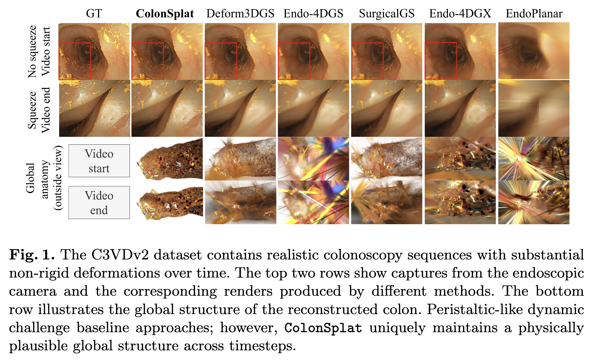
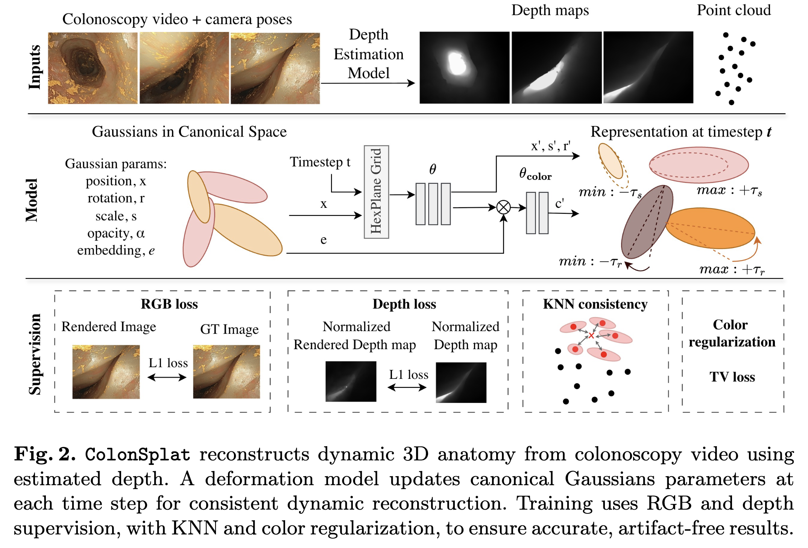

ColonSplat: Reconstruction of Peristaltic Motion in Colonoscopy with Dynamic Gaussian Splatting

Abstract
Accurate 3D reconstruction of colonoscopy data, accounting for complex peristaltic movements, is crucial for advanced surgical navigation and retrospective diagnostics. While recent novel view synthesis and 3D reconstruction methods have demonstrated remarkable success in general endoscopic scenarios, they struggle in the highly constrained environment of the colon. Due to the limited field of view of a camera moving through an actively deforming tubular structure, existing endoscopic methods reconstruct the colon appearance only for initial camera trajectory. However, the underlying anatomy remains largely static; instead of updating Gaussians' spatial coordinates (xyz), these methods encode deformation through either rotation, scale or opacity adjustments. In this paper, we first present a benchmark analysis of state-of-the-art dynamic endoscopic methods for realistic colonoscopic scenes, showing that they fail to model true anatomical motion. To enable rigorous evaluation of global reconstruction quality, we introduce DynamicColon, a synthetic dataset with ground-truth point clouds at every timestep. Building on these insights, we propose ColonSplat, a dynamic Gaussian Splatting framework that captures peristaltic-like motion while preserving global geometric consistency, achieving superior geometric fidelity on C3VDv2 and DynamicColon datasets.
Method overview

Qualitative comparison with existing methods
ColonSplat captures true colon-wall motion significantly better than existing baselines, where motion is mostly encoded through rotation and scale while Gaussian centers do not follow the underlying anatomical deformation.
Ablation Study
Acknowledgments
We thank the authors of publicly available repositories:
ENDO-4DGX, EndoPlanar, SurgicalGS, Endo-4DGS, Deform3DGS, RADE-GS, and C3VDv2.